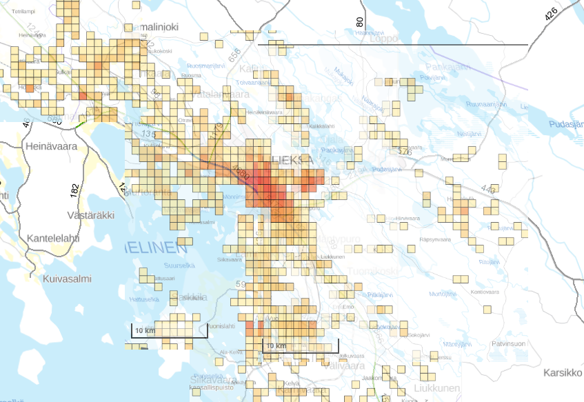
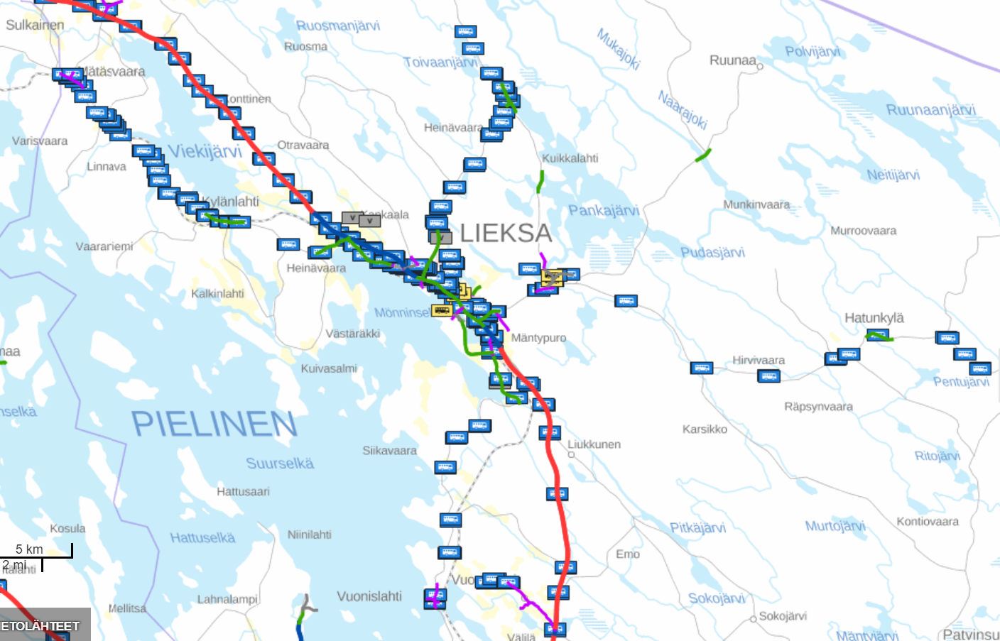

Autonomous vehicle route optimization in Lieksa, Finland
Automated bus stem routes combined with autonomous cars fixing the "last mile problem" and revolutionizing MaaS in rural areas.
Test data for optimizing
User, Pick-up coordinates, Time of pick-up
Stem routes - an effective mobility model for automated traffic
Based on what data were the automated bus stem routes calculated and formed?
 
Highest population density areas and busiest traffic routes are combined to a same map (Image 1) to calculate Stem Routes that will function with quick intervals as the backbone of this new transport arrangement. The main problem is to get on-demand people-flow from the housing areas to the stem route.